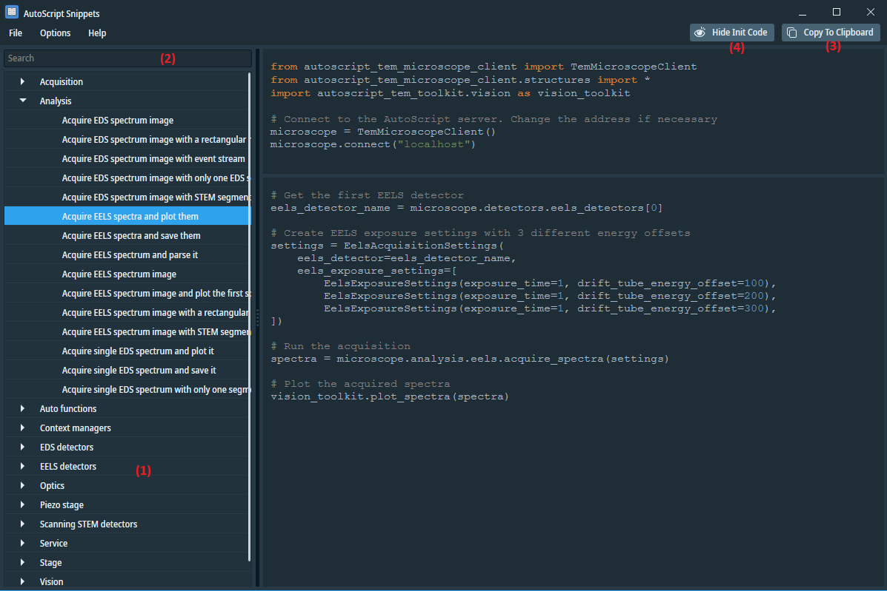

AutoScript Snippets is a useful browser that provides access to a database of simple Python code samples, showcasing various AutoScript API calls. One of its notable features is the ability to perform full-text searches, allowing users to quickly find relevant code snippets based on specific keywords.

In the left pane (1), the code snippets are arranged in categories. When you enter text in the search box (2), the set of snippets is filtered to show only those that contain the entered text either in the name of the snippet or anywhere in the code of the snippet.
Use the Copy button (3) to copy the snippet to the clipboard.
Use the Show / Hide Init Code (4) To toggle the visibility of the top panel containing common
initialization code (such as imports or connecting to server).
Default snippets are stored in C:\ProgramData\Thermo Scientific AutoScript TEM\CodeSnippets. To add custom snippets, you can either add them to this directory or create a new one. The tool can display snippets from multiple source directories if you use the File/Append Snippets folder menu function.